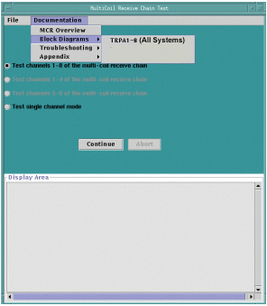
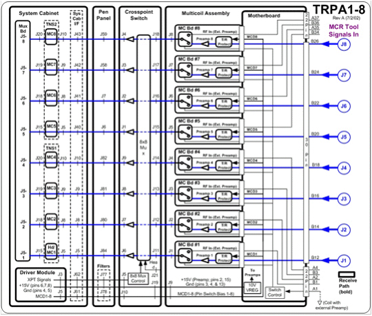
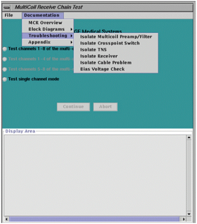
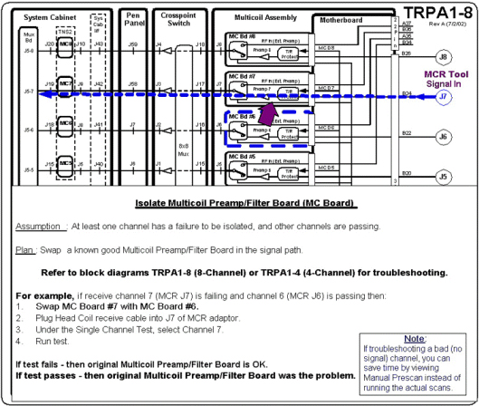
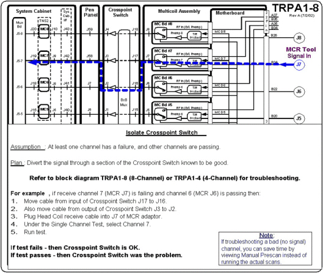
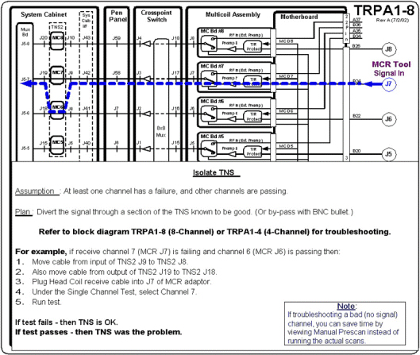
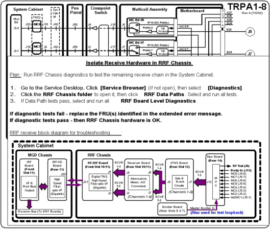
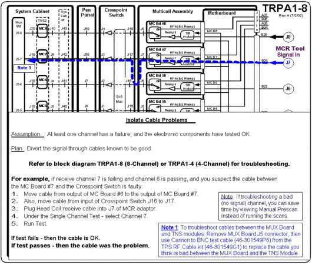
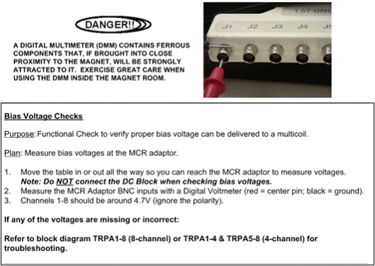

Proprietary to General Electric Company
Direction 5440000, Rev# 5
Signa HDxt Service Methods
Module Version 1.0, Version Date 5/15/07
Proprietary to General Electric Company |
The MultiCoil Receive Chain Tool software interface includes block diagrams and troubleshooting flowcharts to aid in isolating hardware failures.
To access the block diagrams, open the [Documentation] menu on the MultiCoil Receive Chain Test window and then select [Block Diagrams]. See Illustration 1.
Illustration 1: ACCESSING BLOCK DIAGRAMS

Illustration 2: BLOCK DIAGRAM TRPA1-8

To access the troubleshooting documents, select [Documentation], [Troubleshooting], and then the hardware being isolated. See Illustration 3.
Illustration 3: ACCESSING TROUBLESHOOTING FLOWCHARTS

The screens that are accessible from the software interface are as follows:
·MultiCoil Preamp/Filter, Illustration 4
Crosspoint Switch, Illustration 5
TNS, Illustration 6
Receiver, Illustration 7
Cable Problems, Illustration 8
Bias Voltage Check, Illustration 9
Illustration 4: PREAMP/FILTER

Illustration 5: CROSSPOINT SWITCH

Illustration 6: TNS

Illustration 7: RECEIVER

Illustration 8: CABLE PROBLEMS

Illustration 9: BIAS CHECKS
